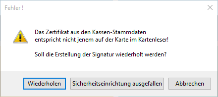

Wenn die bei der Kasse hinterlegte Signatur beim Erfassen eines Barbelegs bzw. einer Barzahlung nicht abgerufen werden kann, wird auf dies mithilfe einer Meldung Aufmerksam gemacht.
Es kann zu folgender Meldung kommen: (Die Fehlerbeschreibung kann je nach Fehler abweichen)

Ø Wiederholen
Wenn Wiederholen gedrückt wird, wird versucht die Signatur nochmals zu Erzeugen. Falls es möglich sein sollte die Signatur zu erstellen, verschwindet dieses Fenster und der Beleg bzw. die Zahlung wird abgeschlossen. Andernfalls erscheint die Meldung wieder.
Ø Sicherheitseinrichtung ausgefallen
Mithilfe dieser Option kann ein Beleg bzw. eine Zahlung trotz ausgefallener Sicherheitseinrichtung abgeschlossen bzw. gedruckt werden. Der Beleg bzw. die Zahlung wird anschließend abgeschlossen und ein Eintrag im DEP wird generiert. Im QR-Code dieses Belegs ist jedoch der Vermerk "Sicherheitseinrichtung ausgefallen" ersichtlich. Sobald die Sicherheitseinrichtung wieder in Betrieb ist und ein Beleg geschrieben werden kann, muss der erste bzw. zweite Eintrag nach diesem Beleg ein Sammelbeleg mit Betrag 0,- sein.
Hinweis
Wenn die Version 10.3 mit dem Build 10003.5 im Einsatz ist, wird dieser Sammelbeleg automatisch erzeugt, wenn ein Beleg erzeugt werden kann, der vorherige Beleg jedoch mit "Sicherheitseinrichtung ausgefallen" gekennzeichnet wurde.
Ø Abbrechen
Bricht den kompletten Vorgang ab. Es wird keine Rechnung und keine Zahlung durchgeführt und man gelangt wieder zurück zum verwendeten Menüpunkt.